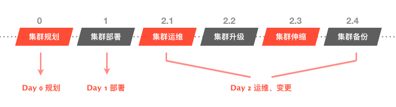

七、常见问题
1 KubeOperator 的定位是什么？
云原生正在快速兴起，三个互相关联的领域在同步进化：
- 基础设施方面：从 物理资源 到 虚拟化资源 到 容器化（ Kubernetes ）资源 的演进；
- 开发模式方面：从 瀑布模型 到 敏捷开发 到 DevOps 的演进；
- 应用架构方面：从 单体架构 到 多层次架构 到 微服务 的演进。
KubeOperator 专注于解决基础设施层面的问题，为开发者交付生产级别可用的 K8s 集群，实现 Kubernetes as a Service。
2 KubeOperator 与 Kubespray 等部署工具的区别是什么？
KubeOperator 不仅提供 Day 1 部署功能，还提供 Day 2 的 Kubernetes 集群升级、扩容、监控检查、备份恢复等功能，如下图所示。

除此之外，KubeOperator 还有如下优势：
- 提供可视化的 Web UI，大大降低部署和管理 K8s 的门槛；
- 提供离线的、经过全面验证和测试的安装包；
- 与 VMware 和 Openstack 等云平台紧密对接，能够实现一键虚机自动创建和部署（基于 Terraform 和 Ansible）；
- KubeOperator 会提供经过充分验证的成熟企业级存储和网络方案。
3 KubeOperator 与 OpenShift 等 PaaS 平台有什么区别？
- 红帽 OpenShift 是一个非常全面的容器云平台，既包括面向运维人员的集群管理功能集，也包括面向开发人员的 CI/CD、DevOps、服务目录等功能集。
- KubeOperator 只专注于解决运维人员侧的问题，即专注于帮助运维人员部署和管理安全、稳定、生产级别的 Kubernetes 集群。此外，KubeOperator 对外开放 REST API，可以实现 Kubernetes as a Service，开发人员可以自助申请 Kubernetes 集群并完成自动化交付。
4 K8s 集群应该部署在物理机上面，还是 IaaS 平台上面？
总的来说，企业有两种方案选择：
- 基于物理机部署大的 K8s 集群：通过 namespace 实现租户的隔离；
- 基于 IaaS 平台之上部署多个 K8s 集群：为每个租户分配独立的 K8s 集群；
这两种方案各有好处，在 K8s 采纳初期，使用第二种方案更为理性，因为：
- 如果是单一大集群，升级会影响所有租户，风险比较大；
- IaaS 平台上有成熟的、基于软件定义的存储和网络方案，落地更容易和灵活；
- KubeOperator 与 VMware、Openstack 等 IaaS 方案紧密集成，可以实现全栈的自动化，集群交付快，伸缩快；
5 采用原生 Kubernetes 有什么好处？
总的来说，相对于发行版，采纳原生 Kubernetes 有两个好处：
- Kubernetes 迭代很快，且只维护最新的三个大版本。如果采纳其他发行版，可能很容易出现和原生版本脱节的情况。
- 由于 Operator 和 Helm 等日趋成熟，很多发行版的功能，比如 CI/ CD, Istio 等都可以通过 addon 方式部署到 K8s 集群里面。Kubernetes 集群及其里面的应用应该是分离的，各自迭代升级。
6 KubeOperator 支持哪些持久化存储？
KubeOperator 支持三类存储：
- NFS 存储：手动模式和自动模式下的集群都支持 NFS 作为持久化存储。
- 自动模式下，KubeOperator 通过 VMware 提供的 vSphere Cloud Provider 支持企业级存储，包括 具体请参考： https://vmware.github.io/vsphere-storage-for-kubernetes/documentation/overview.html#vsphere-storage-concepts
- 自动模式下，KubeOperator 通过 Openstack 提供的 Openstack Cloud Provider 对接 Cinder。Cinder 支持的存储种类包括：https://wiki.openstack.org/wiki/CinderSupportMatrix
Static and Dynamic PVs 的支持情况取决于所选择的存储。以 vSphere 平台为例，各种存储选项可以参考这篇文章：
7 K8s 集群里的 master 、 worker 节点以及相关内置应用默认用户名/密码？
如果是自动模式创建的 K8s 集群，集群中 master 和 worker 节点的默认用户名和密码为：root / KubeOperator@2019
访问 Grafana 、Registry 和 Weave Scope 应用的默认用户名和密码是相同的都是：admin / admin123
8 KubeOperator 自身重启、升级或者挂掉会影响其创建和管理的 K8s 集群吗？
不会有任何影响。KubeOperator 是一个 100% 旁路系统，其与被管 K8s 集群完全解耦。
9 重启 KubeOperator 部署的 K8s 集群的节点后，比如 Master 或者 Worker 节点，会自动恢复正常吗？
会自动恢复正常。
10 KubeOperator 支持的 vSphere 版本是什么？
- 如果是手动部署模式 + NFS，支持 vSphere 5.5 及以上版本。
- 如果是自动模式 + vSAN，支持 vSphere 6.5 及以上版本
11 KubeOperator 仅支持 CentOS 7.6 Minimal 及以上版本作为 K8s 节点的操作系统吗？
是。KubeOperator 的管理范围包括操作系统，比如操作系统补丁升级，其提供的离线包包括操作系统（自动模式）及其 RPM 包，一个离线包版本代表一个终态，并被充分测试和验证。
注：KubeOperator 不支持 CentOS 8，目前支持的版本是 CentOS 7.6, 7.7 Minimal.
12 K8s 集群的升级策略是什么？
KubeOperator 支持小版本的升级，比如 1.15.2 升级到 1.15.， 不能升级到 1.16. 。
13 KubeOperator 是否已通过云原生基金会的 Kubernetes 软件一致性认证？
是的。KubeOperator 2.1 版本已经通过认证，具体请参加：https://landscape.cncf.io